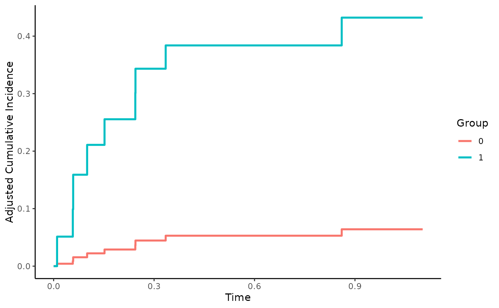
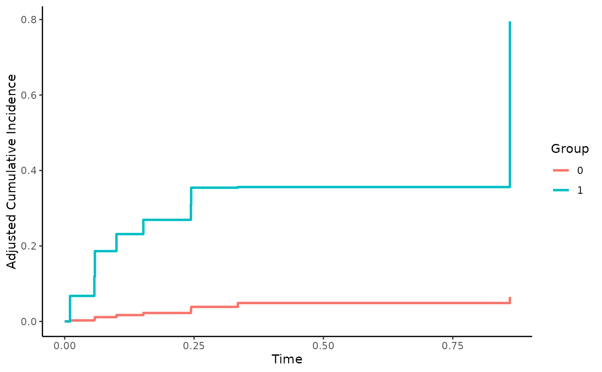

Direct Adjusted Cumulative Incidence Functions
cif_direct.RdThis page explains the details of estimating confounder-adjusted CIFs using a previously fit model to describe the outcome mechanism in a competing risks setting (method="direct" in the adjustedcif function). All regular arguments of the adjustedcif function can be used. Additionally, the outcome_model argument has to be specified in the adjustedcif call. Further arguments specific to this method are listed below.
Arguments
- outcome_model
[required] Must be a previously fit model object including
variableas independent variable. Apart from the classicCauseSpecificCoxmodel this function also supports a variety of other models, such as the Fine & Gray model (FGR). Seemodels_cif_directfor a list of supported model objects and some more details.- verbose
Whether to print estimation information of the
atefunction in the riskRegression package. Defaults toFALSE. Ignored if aoutcome_modelis not aCauseSpecificCoxmodel.- predict_fun
A function which should be used to calculate the predicted cause-specific cumulative incidences given covariates and some points in time. This argument only needs to be specified if the kind of model supplied in the
outcome_modelis not directly supported. Seemodels_cif_directfor more information. Defaults toNULL.- ...
Further arguments passed to
atewhen aCauseSpecificCoxmodel is supplied in theoutcome_modelargument. Otherwise arguments are passed to the respectivepredictfunction. Seemodels_cif_directfor more details.
Details
Type of Adjustment: Requires a model describing the outcome mechanism. Both Cause-Specific-Cox models (
CSC) and Fine & Gray models (FGR) are supported, as well as other models. Seemodels_cif_directfor a full list.Doubly-Robust: Estimates are not Doubly-Robust.
Categorical groups: Any number of levels in
variableare allowed. Must be a factor variable.Approximate Variance: Asymptotic variance calculations are only available if the
outcome_modelis aCauseSpecificCoxmodel. Theatefunction is used for the calculation in that case. Bootstrap confidence intervals can however be calculated with all supported models. See?adjustedciffor more information on bootstrapping.Allowed Time Values: Allows both continuous and integer time.
Bounded Estimates: Estimates are guaranteed to be bounded in the 0 to 1 probability range.
Monotone Function: Estimates are guaranteed to be monotone.
Dependencies: This method relies on the riskRegression package. Depending on
outcome_modelother packages might be needed. Seemodels_cif_directfor more details.
This method works by executing the following steps: (1) First a model is fitted which describes the outcome mechanism (time-to-event). Next (2) multiple copies of the original dataset are created, one for each possible level of the variable of interest. (3) The variable is then set to one level for all observations in each dataset. (4) The model is used to predict the CIF at some points in time T for each observation in all dataset copies. (5) Those estimated probabilities are averaged for each dataset at each point in time, resulting in adjusted CIFs for all levels of the group variable at the specified points in time.
In the literature this method is sometimes called "Direct Standardization", "Corrected Group-Prognosis", "G-Computation" or "G-Formula". If the model in step (1) is "correct"" this method will produce unbiased estimates of the counterfactual cumulative incidences. A model can be called a "correct" model in this context if it can be used to produce unbiased estimates of the true (but unknown) individual CIFs given covariates. When used properly this is one of the most efficient methods. Theoretically any type of model could be used. The most popular ones are CSC models and FGR models, but a variety of others models is also supported. More information can be found in the literature listed in the references.
Value
Adds the following additional objects to the output of the adjustedcif function:
ate_object: The object returned by theatefunction.
References
Xu Zhang and Mei-Jie Zhang (2011). "SAS Macros for Estimation of Direct Adjusted Cumulative Incidence Curves Under Proportional Subdistribution Hazards Models". In: Computer Methods and Programs in Biomedicine 101.1, pp. 87-93
Brice Maxime Hugues Ozenne, Thomas Harder Scheike, and Laila Staerk (2020). "On the Estimation of Average Treatment Effects with Right-Censored Time to Event Outcome and Competing Risks". In: Biometrical Journal 62, pp. 751-763
Author
The function itself was written by Robin Denz. When using CauseSpecificCox models however, this function is just a wrapper around the ate function, which was written by other people. See ?ate for more information.
Examples
library(adjustedCurves)
library(survival)
if (requireNamespace("riskRegression") & requireNamespace("prodlim")) {
library(riskRegression)
library(prodlim)
set.seed(42)
# simulate some data as example
sim_dat <- sim_confounded_crisk(n=50, max_t=1.2)
sim_dat$group <- as.factor(sim_dat$group)
# estimate a cause-specific cox-regression for the outcome
cox_mod <- CSC(Hist(time, event) ~ x1 + x2 + x3 + x4 + x5 + x6 + group,
data=sim_dat)
# use it to calculate adjusted CIFs
adjcif <- adjustedcif(data=sim_dat,
variable="group",
ev_time="time",
event="event",
cause=1,
method="direct",
outcome_model=cox_mod,
conf_int=FALSE)
# plot the curves
plot(adjcif)
# estimate a Fine & Gray model for the outcome instead
fgr_mod <- FGR(Hist(time, event) ~ x1 + x2 + x3 + x4 + x5 + x6 + group,
data=sim_dat, cause=1)
# use it to calculate adjusted CIFs
adjcif <- adjustedcif(data=sim_dat,
variable="group",
ev_time="time",
event="event",
cause=1,
method="direct",
outcome_model=fgr_mod,
conf_int=FALSE)
# plot the curves
plot(adjcif)
}
#> Warning: Rare event

# not run because it would be too slow
# \donttest{
## using multiple imputation
if (requireNamespace("riskRegression") & requireNamespace("prodlim") &
requireNamespace("mice")) {
library(mice)
# introduce random missingness in x1 as example
# NOTE: This is only done as an example, in reality you would
# already have missing data, not introduce it yourself.
sim_dat$x1 <- ifelse(runif(n=50) < 0.5, sim_dat$x1, NA)
# perform multiple imputation
mids <- mice::mice(data=sim_dat, method="pmm", m=5, printFlag=FALSE)
# fit model for each imputed dataset, using the CSC_MI helper function
mira <- CSC_MI(mids, Hist(time, event) ~ x1 + x2 + x3 + x4 + x5 + x6 + group)
# calculate adjusted CIFs on imputed data
adj <- adjustedcif(data=mids,
variable="group",
ev_time="time",
event="event",
method="direct",
cause=1,
outcome_model=mira)
plot(adj)
}
#> Warning: Rare event
#> Warning: Rare event
#> Warning: Rare event
#> Warning: Rare event
#> Warning: Estimated risk outside the range [0,1].
#> Consider setting the argument 'product.limit' to FALSE.
#> Warning: Rare event

# }